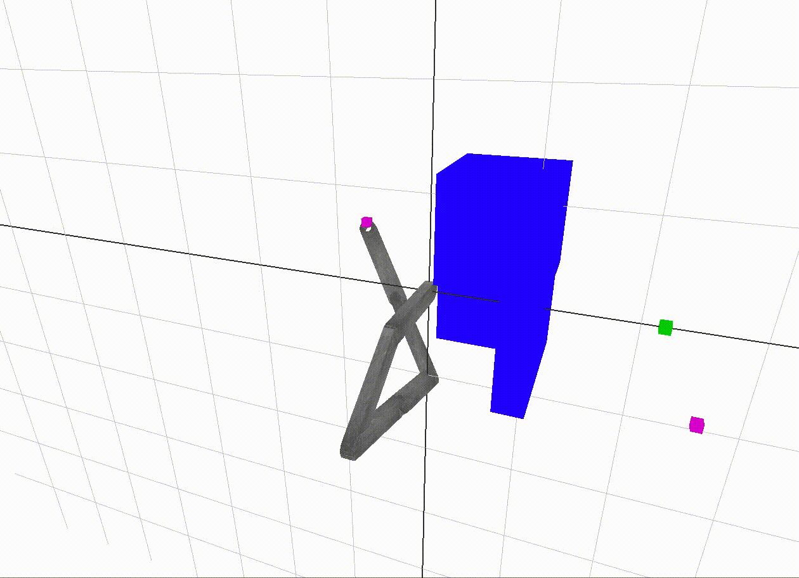
The overall idea of the project is to enable a robotic arm to navigate from a start point to a goal point in 3D space without colliding with itself or any other obstacles. The major components of the project are:
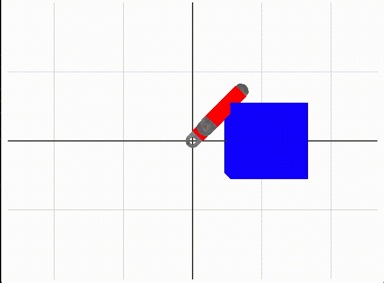
We use box colliders to define what is free space without collision. A collision is either a collision between links or a collision between a link and the blue boxes in the environment. When we test a set of angles, we use forward kinematics to move the robot, then check collisions with box-box collision code from the ODE library, with an Eigen wrapper, provided by Dr. Sueda. Red coloring of link collider boxes means there is a collision detected.
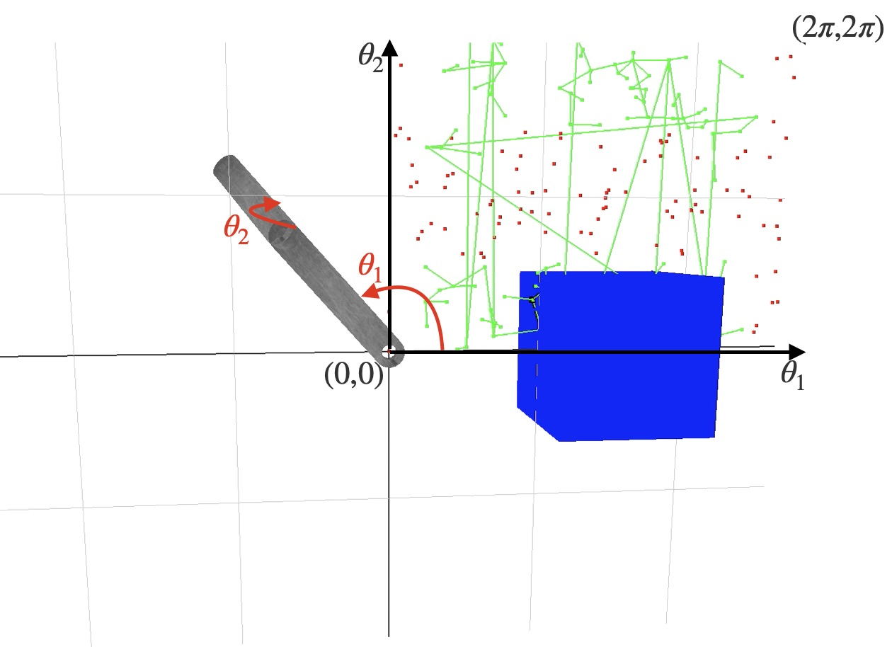
In the 2-link case, we have that theta_1 is the angle of the first link rotated about the z-axis, and theta_2 is the angle of the second link rotated about the (transformed) y-axis. In the first quadrant, we have graphed random points in the 2D c-space with theta_1 on the x-axis and theta_2 on the y-axis. They are red if they result in a collision, and they are green if they are in free space. The green vertices are added to a graph, and edges are made between the closest vertices. These edges have also been drawn.
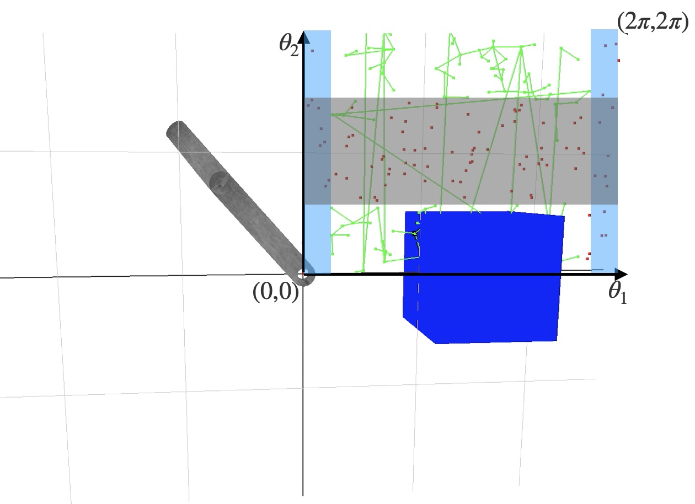
The vertical blue bars are collisions with the blue cube. Recognize that with a theta_1 less than about pi/6 or greater than about 11pi/6, there is no value for theta_2 which prevents a collision. The horizontal bar corresponds to collisions between the links of the chain. For any value of theta_2 between about 3pi/4 and 5pi/4, there is a collision between the links.
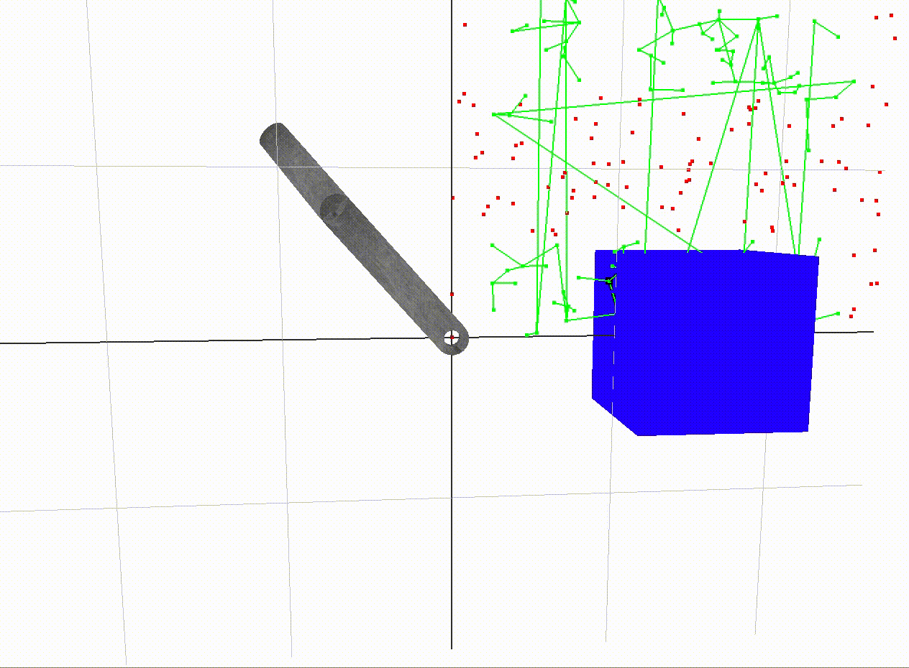
A path between two vertices in the free space graph is traced out above.
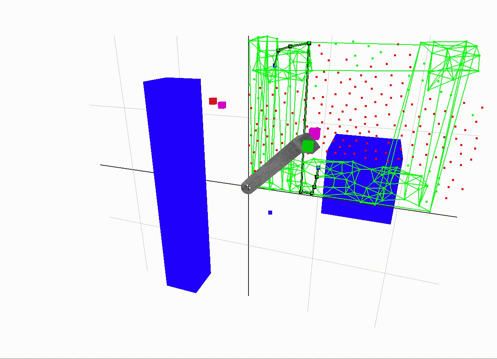
The start end-effector position is red and the goal position is green. The magenta dots are the vertices in the graph with the closest end-effector positions to the start and goal positions. The black path traced in the 2D c-space is a shortest path between the magenta vertices. The edge weight along an edge is the sum of angular displacement between its two incident vertices. In A* search, the heuristic used to guess the distance from the goal vertex is just the angular displacement, so it is as if an edge existed straight to the goal. This is called the straight-line distance heuristic, which is popular since it is a simple way to make an admissible guess - one which never overestimates the distance to the goal.
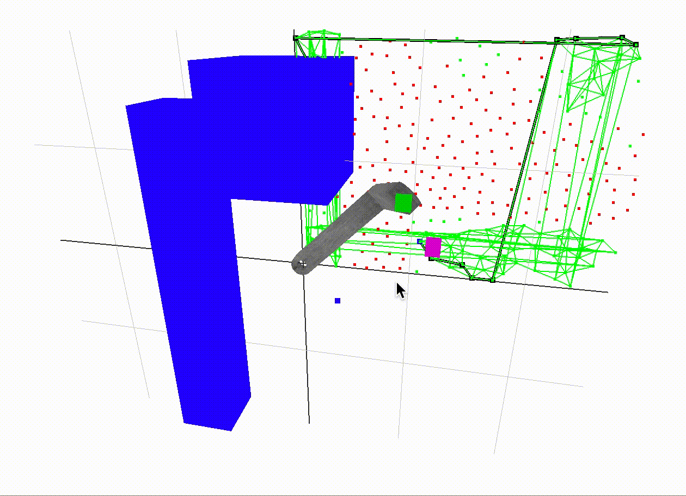
Here is a demonstration of a different configuration. Also note that the points in our c-space are much more nicely spaced out in comparison to the first examples. In the end, we use poisson disk sampling from this external library to achieve this result. It is helpful to have evenly spaced sample points in our c-space to achieve a consistent resoultion.
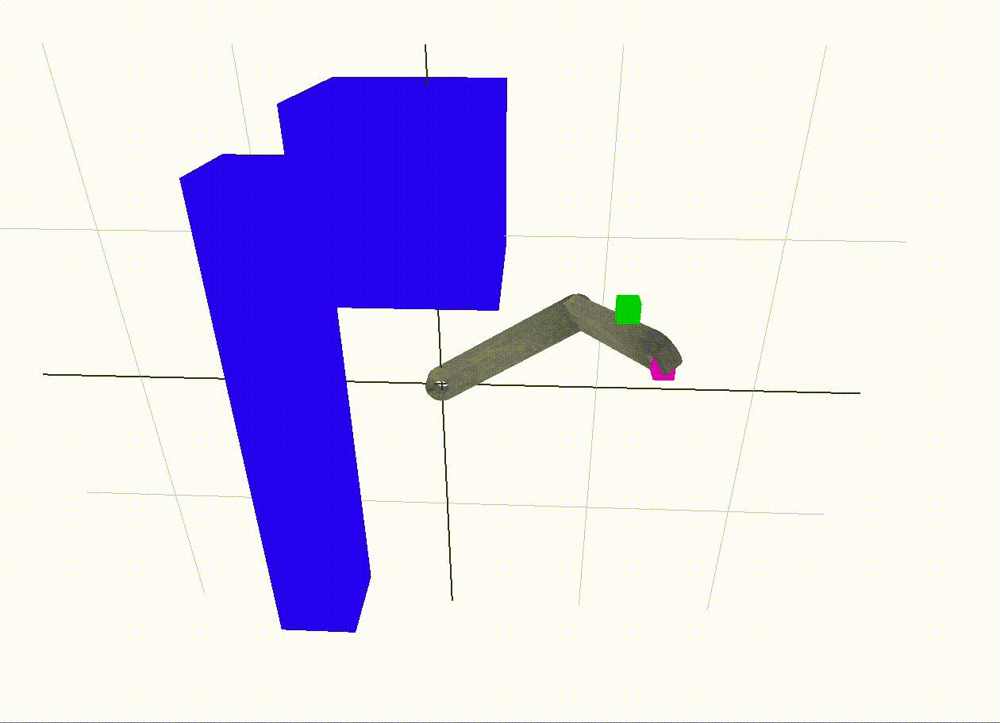
Inverse kinematics takes us from the last free space vertex to the goal. Especially with larger amounts of links in the robot, it is impossible to cover the entire 3D end-effector space with points in the c-space. So, we need some way to carry us the last little bit. Inverse kinematics is a natural solution to this problem, since we need to find a set of angles close to our goal vertex which take the end-effector to its goal position.
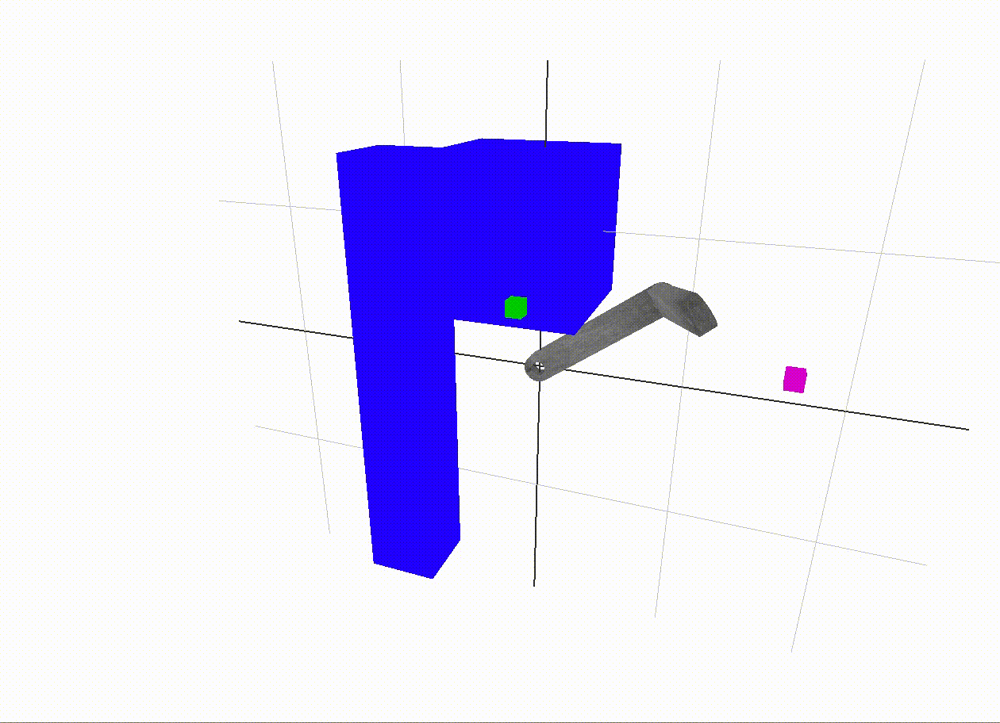
For this approach to cover all cases correctly, the inverse kinematics algorithm should also penalize collisions. I attempted this, but once a collision was encountered, it was difficult to find the way out of local minima with only standard gradient descent with line search and Newton's method. The inverse kinematics approach shown above does not penalize collisions, as this hurt more than it helped when it was attempted. A good future addition would be a more refined optimization algorithm to avoid collisions during the inverse kinematics step.
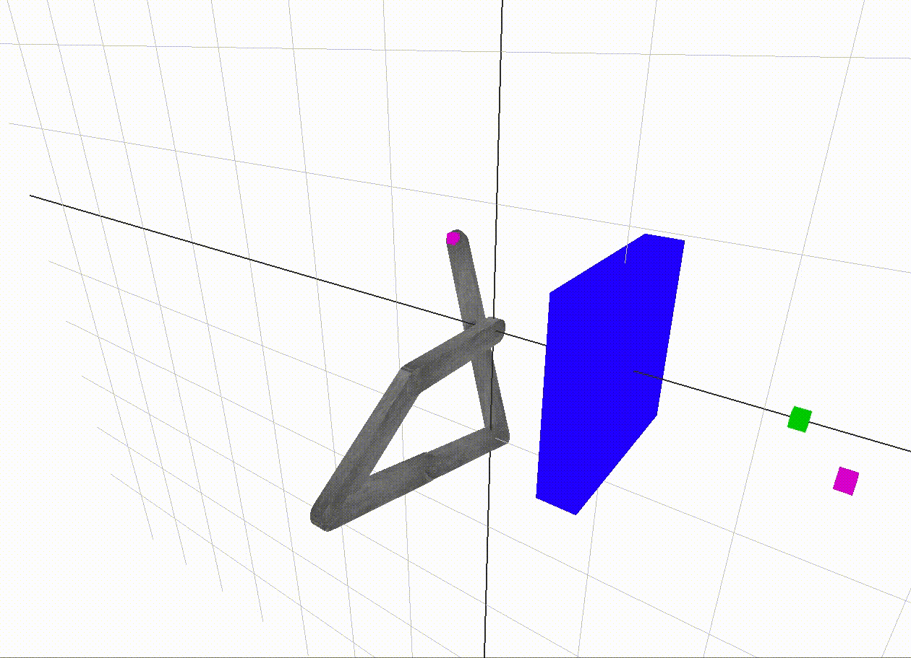
This c-space tests 60,000 vertices. The sixth root is around 6. This means we only have about 6 angle samples per link in the robot arm!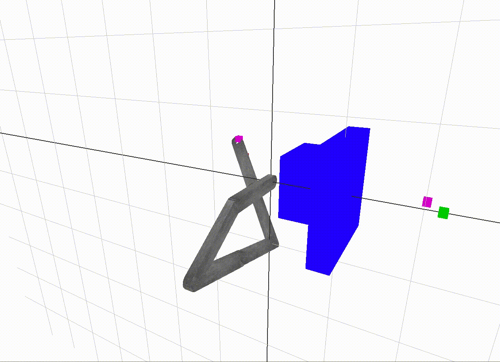
There are a few possible improvements worth mentioning. The obvious one is to increase the number of samples tested by the c-space. The poisson disk samples take a long time to generate, but they can be generated in a precomputation phase and stored in memory. Then, the bottleneck is creating the free space graph (only need to do this every time the environment changes). One tradeoff available in this step is to decrease the vertex degree in favor of adding more vertices. This could make a shortest path longer, but this would fix some of the discrepancy between the goal vertex end-effector and the goal position, so the IK wouldn’t have to work so hard. A* search only explores a subset of the vertices and edges, so it is the next most computationally expensive step. Other heuristics might be worth exploring for various categories of obstacle patterns.
Another improvement would be to improve inverse kinematics with collision detection, avoiding the local minimum problem mentioned earlier.